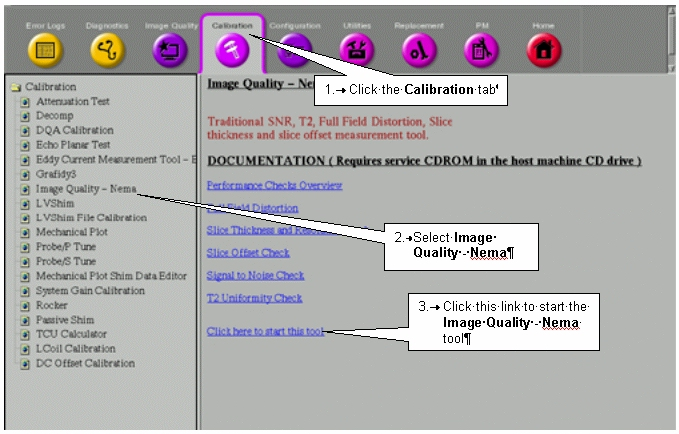

Operating Documentation
Direction 5133330-3, Rev# 14
Signa EXCITE HD 3.0T Service Methods
Module Version 1.0, Version Date 5/3/07
Operating Documentation |
| Required Persons | Preliminary Reqs | Procedure | Finalization |
|---|---|---|---|
| 1 | Not Applicable | 30 mins | Not Applicable |
A Full Field Distortion (FFD) phantom is scanned at the maximum FOV in the sagittal and coronal planes at the center of the scanner bore. The resultant images display a matrix of 50 mm x 50 mm squares from which the field linearity is measured. Body scans are used for all scan sequences.
| NOTE: | For TwinSpeed, the test should be repeated separately for each Gradient mode. |
| Item | Qty | Effectivity | Part# | Manufacturer | |
|---|---|---|---|---|---|
| FFD Phantom, 46-258582G1 | 1 | - | - | - | |
| Phantom Positioner Assembly, 46-258709G1 | 1 | - | - | - | |
| NOTE: | Equipment damage possibility. Complete remove the Quad Head Coil from the cradle before performing any body scans. Failure to do so may damage the head coil T/R network. |
Remove the Quad head coil from the cradle.
Place the FFD phantom on the positioner assembly and center it on the table with plates oriented vertically (black alignment line on top) and the alignment block on the right side of the phantom (as you face the magnet). The side of the phantom with the alignment lines should face up. Landmark (axial) on the middle vertical tube of the center plate.
At the keypad on the front magnet enclosure, press LANDMARK and MOVE TO SCAN. See Illustration 1 .
Illustration 1: Sagittal FFD Phantom Positioning

At the operator workspace, prepare the system for a Full Field Distortion (sagittal) scan using the Service Protocols procedure located on the service methods CD-ROM, or for the alternate proprietary procedure, see below. This alternate proprietary procedure is available for GE use, and to sites with a valid Advanced Service Package Limited License.
Click on [New Pt]<Enter>
ID: <geservice>
Name: ffd
Weight (lb): 111
Set Patient Protocols to Service
Select the scan protocol by clicking on Other, select the Full Field Distortion protocol and series 1 from the menu then click [Accept] to load the Full Field Distortion (Sagittal) protocol.
For TwinSpeed, select the Gradmode.
[Save Series], then [Prepare to Scan].
Click on [Autoview], just below the Autoview image display screen. Your images will be automatically displayed.
Click on [Scan] (The system runs Auto Prescan first.)
For analysis, see Section 4- FFD Image Analysis.
Remove the Quad head coil from the cradle.
| NOTE: | Equipment damage possibility. Completely remove the Quad Head Coil from the cradle before performing any body scans. Failure to do so may damage the head coil T/R network. |
Place the FFD phantom (with the alignment block facing down) on the holder for a coronal scan, and align with the alignment beams as shown in Illustration 2. Landmark (axial) on the center of the phantom.
Illustration 2: Coronal FFD Phantom Positioning

At the keypad on the front magnet enclosure, press <LANDMARK> and <MOVE TO SCAN>.
At the operator workspace, prepare the system for a Full Field Distortion (coronal localizer) scan using the Service Protocols procedure on the Service Methods CD-ROM, or, for the alternate proprietary procedure, see below. This alternate proprietary procedure is available for GE use, and to sites with a valid Advanced Service Package Limited License.
Click on [New Pt]<Enter>.
ID: geservice
Name: ffd
Weight (lb.): 111
Set Patient Protocols to Service
Select the scan protocol by clicking on Other, select the Full Field Distortion protocol and series 2 from the menu then click [Accept] to load the Full Field Distortion (Coronal Localizer) protocol.
For TwinSpeed, select the GradMode.
[Save Series], then [Prepare to Scan].
| NOTE: | This localizer scan is required to determine the A/P location for scanning the center plate of the FFD phantom. |
Click on [Autoview], just below the Autoview image display screen. Your images will be automatically displayed.
Click on [Scan]. (The system runs Auto Prescan first.)
Using Autoviewer, display the image of the localizer scan (see Illustration 3).
Illustration 3: Axial Localizer Display

Select [Report Cursor] in the Autoview window. Place the cursor on the center bright spot of the axial localizer display. The cursor position should lie within the center plate.
Check for skewing of the phantom in relation to the horizontal plane. If skewing is present, reposition the phantom and rescan.
Record the A/P location (e.g., A14 mm) with the cursor centered on the center plate. This location will be used when you perform the coronal FFD scan.
At the operator Workspace, prepare the system for a Full Field Distortion (coronal) scan using the Service Protocols procedure located on the Service Methods CD-ROM.
Click on [Scan] (The system runs Auto Prescan first.)
You are now ready to analyze the image.
To run the Image Quality Analysis – NEMA tool from the Service Desktop, follow the instructions on Illustration 4, below.
Illustration 4: Starting the Image Quality - NEMA Tool from the Service Browser

For TwinSpeed, highlight the same GradMode that was used with the sagittal and coronal scans, then click [OK].
A NEMA Image Quality window will appear on the desktop. Type 5 for Full Field Distortion Check. Type 5<Enter> for Full Field Distortion Check. See Illustration 5.
Illustration 5: NEMA Image Quality Analysis Menu

Select the sagittal exam, series, and image numbers for the image to be analyzed.
Analysis then begins. The final values are displayed on the screen. (See Illustration 6.)
Illustration 6: FFD Analysis Report Screen

Record the Lengths, Percent Distortions, and Superior to Inferior Coil Symmetry in the Data Sheet. For TwinSpeed, identify the GradMode used.
Store all completed data sheets for future reference.
When the analysis is finished, type 6 and press <Enter> to exit the NEMA Image Quality and close the window.
No finalization steps.